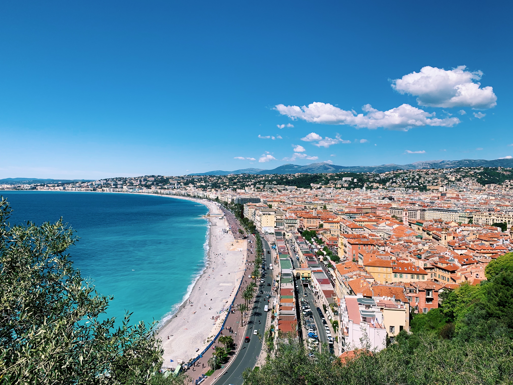

01 / Nice
Ницца — с интересом и любовью
Старая Ницца, Cours Saleya, море, Савойская история и рождение одного из самых знаменитых курортов Европы. Не просто прогулка по достопримечательностям, а знакомство с характером города.
Открыть экскурсию →